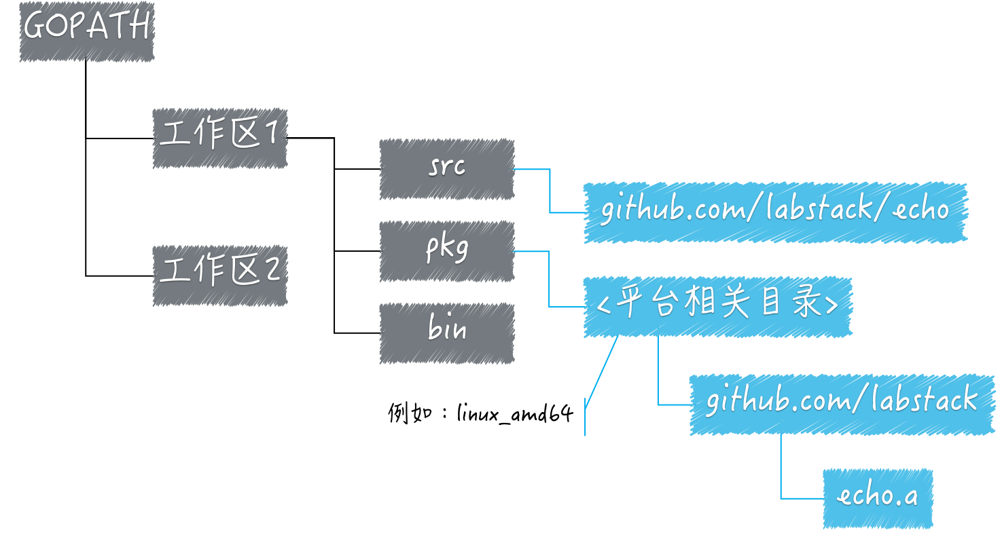

- 00 导读 写给0基础入门的Go语言学习者.md
- 00 导读 学习专栏的正确姿势.md
- 00 开篇词 跟着学，你也能成为Go语言高手.md
- 01 工作区和GOPATH.md
- 02 命令源码文件.md
- 03 库源码文件.md
- 04 程序实体的那些事儿（上）.md
- 05 程序实体的那些事儿（中）.md
- 06 程序实体的那些事儿 （下）.md
- 07 数组和切片.md
- 08 container包中的那些容器.md
- 09 字典的操作和约束.md
- 10 通道的基本操作.md
- 11 通道的高级玩法.md
- 12 使用函数的正确姿势.md
- 13 结构体及其方法的使用法门.md
- 14 接口类型的合理运用.md
- 15 关于指针的有限操作.md
- 16 go语句及其执行规则（上）.md
- 17 go语句及其执行规则（下）.md
- 18 if语句、for语句和switch语句.md
- 19 错误处理（上）.md
- 20 错误处理 （下）.md
- 21 panic函数、recover函数以及defer语句 （上）.md
- 22 panic函数、recover函数以及defer语句（下）.md
- 23 测试的基本规则和流程 （上）.md
- 24 测试的基本规则和流程（下）.md
- 25 更多的测试手法.md
- 26 sync.Mutex与sync.RWMutex.md
- 27 条件变量sync.Cond （上）.md
- 28 条件变量sync.Cond （下）.md
- 29 原子操作（上）.md
- 30 原子操作（下）.md
- 31 sync.WaitGroup和sync.Once.md
- 32 context.Context类型.md
- 33 临时对象池sync.Pool.md
- 34 并发安全字典sync.Map （上）.md
- 35 并发安全字典sync.Map (下).md
- 36 unicode与字符编码.md
- 37 strings包与字符串操作.md
- 38 bytes包与字节串操作（上）.md
- 39 bytes包与字节串操作（下）.md
- 40 io包中的接口和工具 （上）.md
- 41 io包中的接口和工具 （下）.md
- 42 bufio包中的数据类型 （上）.md
- 43 bufio包中的数据类型（下）.md
- 44 使用os包中的API （上）.md
- 45 使用os包中的API （下）.md
- 46 访问网络服务.md
- 47 基于HTTP协议的网络服务.md
- 48 程序性能分析基础（上）.md
- 49 程序性能分析基础（下）.md
- 尾声 愿你披荆斩棘，所向无敌.md
- 新年彩蛋 完整版思考题答案.md
尾声 愿你披荆斩棘，所向无敌
你好，我是郝林。
专栏到这里，就要结束了。
差不多在半年以前（2018年的第二个季度），极客时间的总编辑郭蕾找到我，说想让我写一个关于Go语言的技术专栏。
我那时候还在轻松筹担任大数据负责人，管理着四个技术团队，每天都非常非常忙碌，看起来并没有多余的精力去写这么一个在时间和质量上都有着严格要求的专栏。
我们俩也是老相识了，所以，我当时斩钉截铁地说：“写不了，没时间”。当然了，要是连续熬夜的话或许可以写得出来，我写《Go并发编程实战》那本书的时候就是这么干的。
可是，我在2017年年末已经因为急性胰腺炎惊心动魄过一回了，需要非常注意休息，所以我想了想还是决定小心为妙。
也许是凑巧，也许是注定，在2018年的6月份，我的胰腺炎复发了。我当时还在面试，意念上已经疼得直不起腰了，但还是坚持着完成了面试。
后来在医院等待确诊结果的时候，我的第三个念头竟然就是“也许我可以有时间去写那个专栏了”。现在回忆起来，当初的想法还是太简单了。
不过，专栏这件事情终归还是向着合作的方向发展了。因为郭蕾的坚持和帮助，也因为极客时间的慷慨解囊和多次扶持，在经过了不少的艰难困苦之后，这个专栏如今终于写作完成了。我对此感到非常的高兴和欣慰。
专栏是如何进行写作的
我在写这个专栏的时候，已经尽我所能地让其中的每一句话都准确无误，并且尽量地加入我最新的研究成果和个人理解。
所以，即使是对于我自己，这个专栏的价值和意义也是很大的。我通过这个专栏的写作又倒逼我自己仔细地阅读了一遍Go语言最新版本的源码。
我当初给自己定下了一个关于文章质量的目标。我要保证的是，专栏中的每一篇文章的质量都绝对不能低于这个目标。
没错，这里只有目标，没有底线。对于我个人而言，只要是边界明确的事情，我就不喜欢设置底线。因为只要有了底线，作为更高要求的目标往往就很难达成了。这样的双重标准会让目标形同虚设。
为了达成目标，我在写每一篇文章的时候都差不多要查阅不少的Go语言源码，确定每一个细节。每一个版本的Go语言，其内部的源码都会有一些变化，所以以前的经验只能作为参考，并不能完全依赖。
我需要先深入理解（或者修正理解）、再有侧重点地记录和思考，最后再进行贯穿式的解读。在做完这些之后，我才会把精华写入文章之中。
我觉得，人的成就不论大小都需要经过努力和苦难才能达成。和我共事过的很多人都知道，我是一个不会轻易给出承诺的人。不过，一旦做出承诺，我就会去拼命完成。
大多数时候，我并不觉得在拼命，但是别人（尤其是我的家人）却告诉我“这就是在拼命”。现在想想，这种完全靠爆发力取胜的做事方式是不对的，做工作还是应该顺滑一些，毕竟“润物”需得“细无声”。
专栏仍有瑕疵
虽然这个专栏的文章已经全部完成了，但是由于我的精力问题，专栏在呈现形式上还有一些瑕疵。
比如，没有配图，没有给出思考题的答案等。我在极客时间App的留言区里已经多次跟大家解释过这件事了。
但是为了保证大家都能够知晓，我在这里再说一遍：我会再利用几个月的时间为这个专栏补充配图，并简要地给出所有思考题的答案。
我已经开始绘制一些图片了，绘制完成就会同步更新到文章中，你也可以返回去重新阅读一遍。

（目前正在绘制的图样）
我补充的顺序是，配图在先，思考题答案再后。因为我的精力实在有限，我会争取在明年春节之前完成补充。还希望大家能够理解。
前方的路
每个人的路都是不同的，即便他们在做着一模一样的事。前方的路只有你自己能够开创，但是我希望本专栏能够作为你的一盏指路明灯。我个人认为，至少对于大部分读者而言，我的这个愿望已经达成了。你觉得呢？是否已经有了足够的收获呢？
无论如何，只要你还想继续走在Go语言编程的康庄大道上，积极地加入到有活力、有情怀的技术社区当中准没错。我想，极客时间就将是这样一个社区。当然，我们的“GoHackers”社群也是。
在最后的最后，我想去表达一些感谢，我要由衷地感谢我的家人！如果不是他们，别说写专栏了，我坐在电脑前面打字写文章可能都是奢望，我还要感谢所有帮助过我的人。还有在阅读这篇文章的你们，也是我最大写作动力。
好了，我就先说到这里吧。后面有的是机会。最后，祝你学习顺利，在成为技术大神的道路上披荆斩棘，所向无敌！
© 2019 - 2023 Liangliang Lee. Powered by gin and hexo-theme-book.